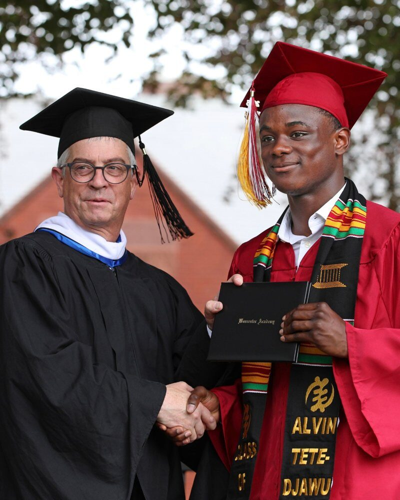

About
The people closest to a problem are often the farthest from the solution.

Our founder
Alvin Tete-Djawu
Alvin is a QuestBridge Scholar at Cornell, studying Applied Economics and Management alongside Information Science.
He grew up in Worcester, Massachusetts, the son of a Ghanaian immigrant single mother. Her sacrifices gave him and his two younger sisters room to dream bigger than their two-bedroom apartment.
Read more at alvinktd.github.io.
In Alvin's words
Every afternoon, my mom's 2003 Toyota RAV4 pulled through my high school's gates behind a line of Teslas and Mercedes. I saw cars worth more than my family's net worth. I also saw cars held together by duct tape and prayers, and I knew which line I came from.
I would be the first in my family to attend college. Every part of the application felt new. My mom had never walked the road I was about to take. Still, she worked overnight shifts while running her catering business, and she pushed me forward with what little time she had left.
Other people carried me the rest of the way. Upward Bound gave me weekly sessions and two summers of college prep. None of them handed me answers. Each one showed me where to look.
By the grace of God, and through the people and programs placed along my way, I made it. Now I want to be one of those people for someone else.


Why Room4Us
I am in this space now. Many of the people I grew up with are not here with me. They are my friends. I love them and care about them so much. There are so many other people I never got to know. I would have had the chance to meet them if they were in this shared space with me.
That needs to change. I do not believe the U.S. education system serves every student with equity. I was stuck in that system. I feel called to return to it. Not as someone ensnared, but as someone who wants to do what I can for others and for all who aspire. Your future should not be decided by the neighborhood you grew up in, how many bedrooms your home had, the color of your skin or your accent.
The 4 in Room4Us stands for the four years of an undergrad degree. The us is the students who never heard a seat was meant for them, like me and the people I grew up with.
If you are already in one of these spaces, bring someone else in. If you are not in one of these spaces yet, you deserve to be here. There is room for you.
Why it matters now
The gap starts before college, and it does not close at graduation.
- 20%of adults whose parents had no education past high school earned a bachelor's degree
- 82%of adults whose parents both held a bachelor's degree earned one
- $99,600median income, first-generation graduate households, 2019
- $135,800median income, graduates with a college-educated parent, 2019
Source. Pew Research Center, "First-Generation College Graduates Lag Behind Their Peers on Key Economic Outcomes," May 18, 2021. Figures for adults ages 22 to 59.
Those numbers describe the system, not the student. We exist so more first-generation students reach college with the guidance, the network and the belief that others take for granted.
What we believe
Work with us
If you see yourself in this story, we want to hear from you.